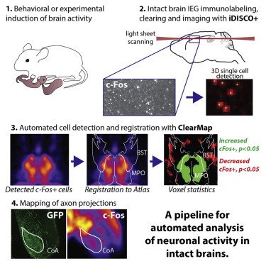

cell_map#
Per-channel cell detection, filtering, atlas alignment, and density mapping.
CellDetector is the pipeline worker for the CellMap pipeline, initially
developped to analyze immediate early gene expression data from iDISCO+ cleared tissue [Renier2016].


Figure 25 iDISCO+ and ClearMap: A Pipeline for Cell Detection, Registration, and Mapping in Intact Samples Using Light Sheet Microscopy.#
CellDetector processes a single fluorescence channel through the following steps:
Cell detection (
run_cell_detection()) — background subtraction, maxima detection, and shape-based watershed segmentation viaCells. Produces a raw cell table (cells_raw).Filtering (
filter_cells()) — thresholds on size and intensity; optional cortical-surface crust removal. Produces a filtered table (cells_filtered).Atlas alignment (
atlas_align()) — transforms coordinates into atlas space via Elastix and annotates each cell with brain-region labels, hemisphere, and structure volume. Produces a per-cell Feather table.Voxelization (
voxelize()) — rasterises cell positions (with optional intensity weighting) into a density volume at atlas resolution for group statistics.Statistics export (
export_collapsed_stats()) — aggregates per-cell data into a per-structure CSV with counts, average size, and volumes for both hemispheres.
Configuration#
Parameters are read from the cell_map config section:
detection.background_correction.diameterdetection.maxima_detection.shape/h_maxdetection.shape_detection.thresholdcell_filtration.thresholds.size/intensityvoxelization.radii
Typical usage#
Instances are normally created via
ExperimentController:
detector = exp_ctrl.get_worker('cell_map', channel='cfos')
detector.run_cell_detection()
detector.filter_cells()
detector.atlas_align()
detector.voxelize()
detector.export_collapsed_stats()
For scripted use without the GUI:
from ClearMap.pipeline_orchestrators.sample_info_management import build_sample_manager
from ClearMap.pipeline_orchestrators.cell_map import CellDetector
sm = build_sample_manager('/path/to/experiment')
det = CellDetector(sm, sm.cfg_coordinator,
channel='cfos', registration_processor=reg)
det.run_cell_detection()
See also
ClearMap.ImageProcessing.Experts.CellsLow-level detection algorithms.
RegistrationProcessorRequired for atlas alignment.
ClearMap.Analysis.Measurements.VoxelizationDensity-map generation.
- class CellDetector(sample_manager: SampleManager = None, config_coordinator: ConfigCoordinator = None, channel=None, registration_processor=None)[source]#
Bases:
ChannelPipelineOrchestrator- export_as_csv()[source]#
Export the cell coordinates to csv
Deprecated since version 2.1: Use
atlas_align()and export_collapsed_stats instead.
- export_to_clearmap1_fmt()[source]#
ClearMap 1.0 export (will generate the files cells_ClearMap1_intensities, cells_ClearMap1_points_transformed, cells_ClearMap1_points necessaries to use the analysis script of ClearMap1. In ClearMap2 the ‘cells’ file contains already all this information) In order to align the coordinates when we have right and left hemispheres, if the orientation of the brain is left, will calculate the new coordinates for the Y axes, this change will not affect the orientation of the heatmaps, since these are generated from the ClearMap2 file ‘cells’
Deprecated since version 2.1: Use
atlas_align()and export_collapsed_stats instead.
- plot_filtered_cells(**kwargs)#
- plot_voxelized_counts(**kwargs)#
- preview_cell_detection(parent: 'QWidget' | None = None, arrange: bool = True, sync: bool = True) list[source]#
- run_cell_detection(tuning=False, save_maxima=False, save_shape=False, save_as_binary_mask=False)[source]#
- setup(sample_manager, channel_name, registration_processor)[source]#
Attach a sample manager and mark this processor as ready.
- Parameters:
sample_manager (SampleManager, optional) – If provided, replaces the currently stored sample manager. When
None, the previously stored instance is reused.- Raises:
ValueError – If the config section identified by
config_nameis absent.
- voxelize(sub_step: str | None = None, weights_column=None)[source]#
Unweighted voxelization (i.e. cell counts) This will draw a sphere of radius r around each cell and increment the voxel values.
- Parameters:
sub_step (str | None) – If specified, will use the coordinates from the specified sub_step (e.g. ‘aligned’)
weights_column (str | None) – If specified, this column in the cells table will be used to add weights to the voxelization spheres (e.g. for intensity voxelization). The column must be present in the cells table.
Returns
coordinates, counts_file_path: np.array, str
- config_name = 'cell_map'#
- property detected#
- property df_path#